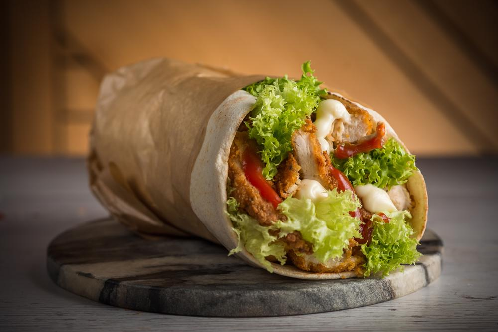

Shaorma

Mancare orientala cu specific romanesc
Shaorma de pui facuta in casa este foarte gustoasa, usor de pregatit,
cu carne aromata, frageda si suculenta, insotita de verdeturi, cartofi prajiti si sosuri.
Shaorma de pui este unul din cele mai populare preparate de fast food din lume, iar reteta
acesteia dateaza inca din secolul al XVIII-lea sau al XIX-lea si se pare ca provine din impreiul otoman.
Iniatial a fost facuta cu carne de miel.
Ingrediente
- 600 g piept de pui
- 250 g iaurt gros
- 2 lingurite pasta de rosii
- 50 ml ulei
- 1 lingura suc lamaie
- 1/2 lingura otet de vin rosu
- 1 lingurita sare
- 1/2 lingurita piper
- 1/2 lingurita condiment 7 piper
- 1 lingurita pudra de usturoi
- 1 lingurita turmeric
Pasi
- Secretul unei shaorme de pui bune sta in marinarea carnii
- Am amestecat foarte bine, pana s-a omogenizat compozitia.
- Am acoperit bolul cu o folie alimentara si l-am pus in frigider pentru minim 4 ore,
apoi l-am scos si l-am lasat la temperatura camerei o ora.
- Am prajit pieptul de pui pe o plita de fonta incinsa foarte bine.
Am lasat o parte din marinata pe carne.
- Dupa ce le-am prajit pe ambele parti le-am scos si le-am lasat 5 minute sa se odihneasca.
Intre timp am amestecat sosul de maioneza cu ketchup si am incalzit lipiile.